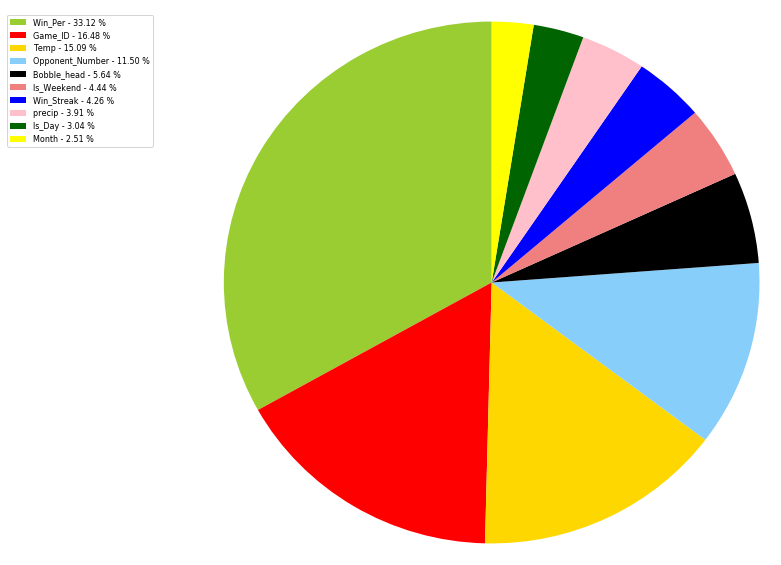

Before we did further analysis, we needed to explored the data. Here are some plots to show what data looked like.
Once we got understood the data and what it was representing, we mathematically analyzed it. How possible was it to run predictive analysis?
Our team decided to use the machine learninig approach with various algorithms (advised Random forest regressor).
The purpose of our model was to predict attendance and the importance of each factor that would be weighed in by our algorithm.
RandomForests for Attendance:
After adding week vs weekend, win percentage, and month into the model as features, the model fit score improved from .08 to .38.
While the additional data did improve the model, our model still doesn't fit the data extremely well. It does suggest that Win percentage, temperature, and opponent are high factor.
Overview:
In addition to looking at the feature importance scores for our model features, Tableau was used to visualize single effects of our model features.